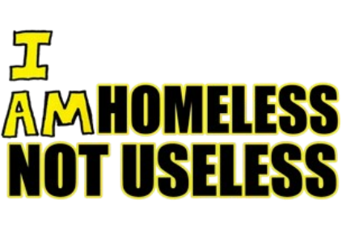
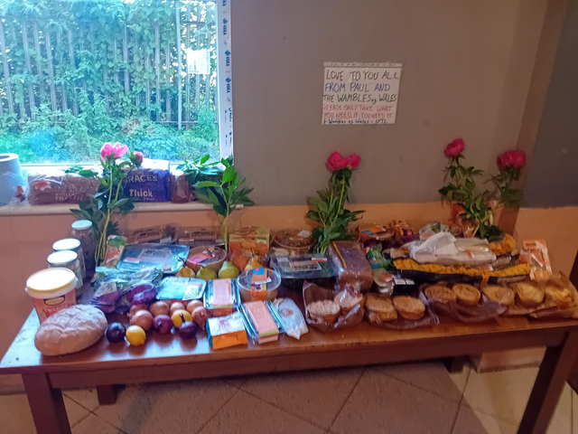
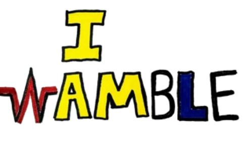

Cardiff community • Wales
We are homeless,
not useless.
Wambles of Wales is a people-powered movement built on dignity, friendship and action. We turn spare time into cleaner streets, shared meals and reasons to say yes to life.

Small acts. Real change.Everyone has something to give.
What we do
Make good trouble together.

Community first
We create welcoming ways for people to connect, contribute and be seen for what they can do.

Practical support
From donations to clean-ups, our projects respond to real needs with the people around us.

Say yes to life
Movement, nature and shared adventures help us build confidence, belonging and momentum.
The Wamble way
There is no “just” in just showing up.
Every bag collected, kind word shared and challenge completed helps make Cardiff a little more connected. Our work is intentionally human: open, imperfect and always moving forward.
Read our story →
Get involved